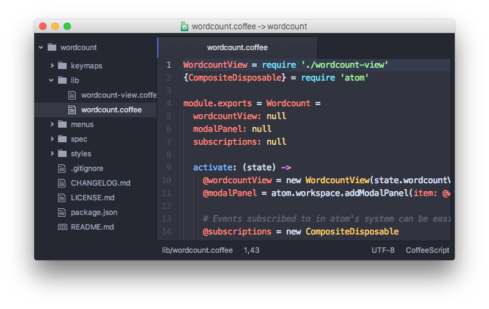
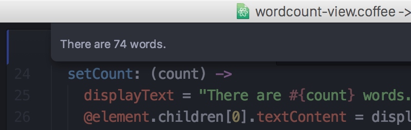
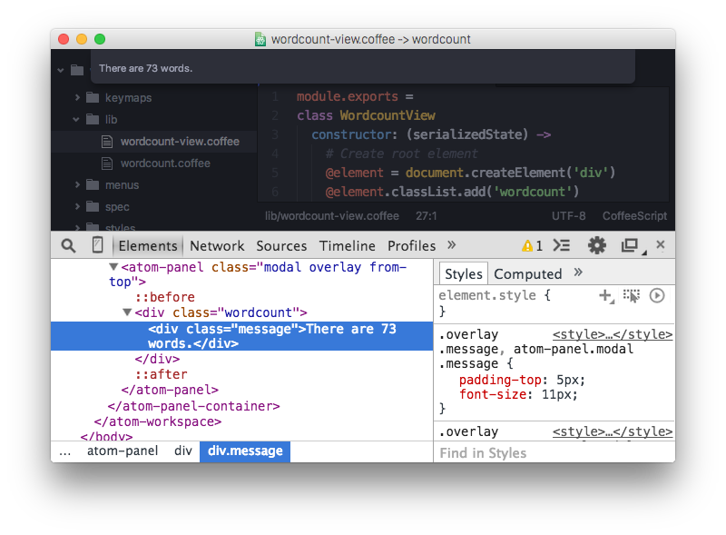
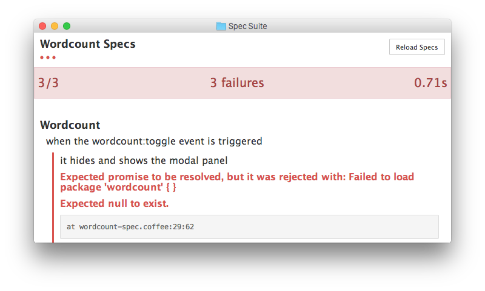

Chapter 1: Getting Started
Chapter 2: Using Atom
- Atom Packages
- Moving in Atom
- Atom Selections
- Editing and Deleting Text
- Find and Replace
- Snippets
- Autocomplete
- Folding
- Panes
- Pending Pane Items
- Grammar
- Version Control in Atom
- Writing in Atom
- Basic Customization
- Summary
Chapter 3: Hacking Atom
- Tools of the Trade
- The Init File
- Package: Word Count
- Package: Modifying Text
- Creating a Theme
- Iconography
- Debugging
- Writing specs
- Cross-Platform Compatibility
- Converting from TextMate
- Summary
Chapter 4: Behind Atom
- Configuration API
- Keymaps In-Depth
- Scoped Settings, Scopes and Scope Descriptors
- Serialization in Atom
- Developing Node Modules
- Interacting With Other Packages Via Services
- Maintaining Your Packages
- Summary
Chapter 5: Upgrading to 1.0 APIs
3.3 Package: Word Count Improve this page
Package: Word Count
Let's get started by writing a very simple package and looking at some of the tools needed to develop one effectively. We'll start by writing a package that tells you how many words are in the current buffer and display it in a small modal window.
Package Generator
The simplest way to start a package is to use the built-in package generator that ships with Atom. As you might expect by now, this generator is itself a separate package implemented in package-generator.
You can run the generator by invoking the command palette and searching for "Generate Package". A dialog will appear asking you to name your new project. Name it your-name-word-count. Atom will then create that directory and fill it out with a skeleton project and link it into your ~/.atom/packages%USERPROFILE%\.atom\packages directory so it's loaded when you launch your editor next time.
Note: You may encounter a situation where your package is not loaded. That is because a new package using the same name as an actual package hosted on atom.io (e.g. "wordcount" and "word-count") is not being loaded as you expected. If you follow our suggestion above of using the your-name-word-count package name, you should be safe 

You can see that Atom has created about a dozen files that make up the package. Let's take a look at each of them to get an idea of how a package is structured, then we can modify them to get our word count functionality.
The basic package layout is as follows:
my-package/
├─ grammars/
├─ keymaps/
├─ lib/
├─ menus/
├─ spec/
├─ snippets/
├─ styles/
├─ index.coffee
└─ package.json
Not every package will have (or need) all of these directories and the package generator doesn't create snippets or grammars. Let's see what some of these are so we can start messing with them.
package.json
Similar to Node modules, Atom packages contain a package.json file in their top-level directory. This file contains metadata about the package, such as the path to its "main" module, library dependencies, and manifests specifying the order in which its resources should be loaded.
In addition to some of the regular Node package.json keys available, Atom package.json files have their own additions.
-
main: the path to the CoffeeScript file that's the entry point to your package. If this is missing, Atom will default to looking for anindex.coffeeorindex.js. -
styles: an Array of Strings identifying the order of the style sheets your package needs to load. If not specified, style sheets in thestylesdirectory are added alphabetically. -
keymaps: an Array of Strings identifying the order of the key mappings your package needs to load. If not specified, mappings in thekeymapsdirectory are added alphabetically. -
menus: an Array of Strings identifying the order of the menu mappings your package needs to load. If not specified, mappings in themenusdirectory are added alphabetically. -
snippets: an Array of Strings identifying the order of the snippets your package needs to load. If not specified, snippets in thesnippetsdirectory are added alphabetically. -
activationCommands: an Object identifying commands that trigger your package's activation. The keys are CSS selectors, the values are Arrays of Strings identifying the command. The loading of your package is delayed until one of these events is triggered within the associated scope defined by the CSS selector. -
activationHooks: an Array of Strings identifying hooks that trigger your package's activation. The loading of your package is delayed until one of these hooks are triggered. Currently, the only activation hook islanguage-package-name:grammar-used(e.g.,language-javascript:grammar-used)
The package.json in the package we've just generated looks like this currently:
{
"name": "wordcount",
"main": "./lib/wordcount",
"version": "0.0.0",
"description": "A short description of your package",
"activationCommands": {
"atom-workspace": "wordcount:toggle"
},
"repository": "https://github.com/atom/your-name-word-count",
"license": "MIT",
"engines": {
"atom": ">=1.0.0 <2.0.0"
},
"dependencies": {
}
}
If you wanted to use activationHooks, you might have:
{
"name": "wordcount",
"main": "./lib/wordcount",
"version": "0.0.0",
"description": "A short description of your package",
"activationHooks": ["language-javascript:grammar-used", "language-coffee-script:grammar-used"],
"repository": "https://github.com/atom/your-name-word-count",
"license": "MIT",
"engines": {
"atom": ">=1.0.0 <2.0.0"
},
"dependencies": {
}
}
One of the first things you should do is ensure that this information is filled out. The name, description, repository URL the project will be at, and the license can all be filled out immediately. The other information we'll get into more detail on as we go.
Warning: Do not forget to update the repository URL. The one generated for you is invalid by design and will prevent you from publishing your package until updated.
Source Code
If you want to extend Atom's behavior, your package should contain a single top-level module, which you export from whichever file is indicated by the main key in your package.json file. In the package we just generated, the main package file is lib/wordcount.coffee. The remainder of your code should be placed in the lib directory, and required from your top-level file. If the main key is not in your package.json file, it will look for index.coffee or index.js as the main entry point.
Your package's top-level module is a singleton object that manages the lifecycle of your extensions to Atom. Even if your package creates ten different views and appends them to different parts of the DOM, it's all managed from your top-level object.
Your package's top-level module can implement the following basic methods:
-
activate(state): This optional method is called when your package is activated. It is passed the state data from the last time the window was serialized if your module implements theserialize()method. Use this to do initialization work when your package is started (like setting up DOM elements or binding events). -
serialize(): This optional method is called when the window is shutting down, allowing you to return JSON to represent the state of your component. When the window is later restored, the data you returned is passed to your module'sactivatemethod so you can restore your view to where the user left off. -
deactivate(): This optional method is called when the window is shutting down. If your package is watching any files or holding external resources in any other way, release them here. If you're just subscribing to things on window, you don't need to worry because that's getting torn down anyway.
Style Sheets
Style sheets for your package should be placed in the styles directory. Any style sheets in this directory will be loaded and attached to the DOM when your package is activated. Style sheets can be written as CSS or Less, but Less is recommended.
Ideally, you won't need much in the way of styling. Atom provides a standard set of components which define both the colors and UI elements for any package that fits into Atom seamlessly. You can view all of Atom's UI components by opening the styleguide: open the command palette Cmd+Shift+PCtrl+Shift+P and search for styleguide, or type Cmd+Ctrl+Shift+GCtrl+Shift+G.
If you do need special styling, try to keep only structural styles in the package style sheets. If you must specify colors and sizing, these should be taken from the active theme's ui-variables.less.
An optional styleSheets array in your package.json can list the style sheets by name to specify a loading order; otherwise, style sheets are loaded alphabetically.
Keymaps
You can provide key bindings for commonly used actions for your extension, especially if you're also adding a new command. In our new package, we have a keymap filled in for us already in the keymaps/wordcount.cson file:
'atom-workspace':
'ctrl-alt-o': 'wordcount:toggle'
This means that if you press Alt+Ctrl+O, our package will run the your-name-word-count:toggle command. We'll look at that code next, but if you want to change the default key mapping, you can do that in this file.
Keymaps are placed in the keymaps subdirectory. By default, all keymaps are loaded in alphabetical order. An optional keymaps array in your package.json can specify which keymaps to load and in what order.
Keybindings are executed by determining which element the keypress occurred on. In the example above, the your-name-word-count:toggle command is executed when pressing Alt+Ctrl+O on the atom-workspace element. Because the atom-workspace element is the parent of the entire Atom UI, this means the key combination will work anywhere in the application.
We'll cover more advanced keybinding stuff a bit later in Keymaps in Depth.
Menus
Menus are placed in the menus subdirectory. This defines menu elements like what pops up when you right click a context-menu or would go in the application menu to trigger functionality in your plugin.
By default, all menus are loaded in alphabetical order. An optional menus array in your package.json can specify which menus to load and in what order.
Application Menu
It's recommended that you create an application menu item under the Packages menu for common actions with your package that aren't tied to a specific element. If we look in the menus/your-name-word-count.cson file that was generated for us, we'll see a section that looks like this:
'menu': [
{
'label': 'Packages'
'submenu': [
'label': 'Word Count'
'submenu': [
{
'label': 'Toggle'
'command': 'your-name-word-count:toggle'
}
]
]
}
]
This section puts a "Toggle" menu item under a menu group named "Your Name Word Count" in the "Packages" menu.

When you select that menu item, it will run the your-name-word-count:toggle command, which we'll look at in a bit.
The menu templates you specify are merged with all other templates provided by other packages in the order which they were loaded.
Context Menu
It's recommended to specify a context menu item for commands that are linked to specific parts of the interface. In our menus/your-name-word-count.cson file, we can see an auto-generated section that looks like this:
'context-menu':
'atom-text-editor': [
{
'label': 'Toggle Word Count'
'command': 'your-name-word-count:toggle'
}
]
This adds a "Toggle Word Count" menu option to the menu that pops up when you right-click in an Atom text editor pane.

When you click that it will again run the your-name-word-count:toggle method in your code.
Context menus are created by determining which element was selected and then adding all of the menu items whose selectors match that element (in the order which they were loaded). The process is then repeated for the elements until reaching the top of the DOM tree.
You can also add separators and submenus to your context menus. To add a submenu, provide a submenu key instead of a command. To add a separator, add an item with a single type: 'separator' key/value pair. For instance, you could do something like this:
'context-menu':
'atom-workspace': [
{
label: 'Text'
submenu: [
{label: 'Inspect Element', command: 'core:inspect'}
{type: 'separator'}
{label: 'Selector All', command: 'core:select-all'}
{type: 'separator'}
{label: 'Deleted Selected Text', command: 'core:delete'}
]
}
]
Developing Our Package
Currently with the generated package we have, if we run that your-name-word-count:toggle command through the menu or the command palette, we'll get a dialog that says "The Wordcount package is Alive! It's ALIVE!".

Understanding the Generated Code
Let's take a look at the code in our lib directory and see what is happening.
There are two files in our lib directory. One is the main file (lib/your-name-word-count.coffee), which is pointed to in the package.json file as the main file to execute for this package. This file handles the logic of the whole plugin.
The second file is a View class, lib/your-name-word-count-view.coffee, which handles the UI elements of the package. Let's look at this file first, since it's pretty simple.
module.exports =
class YourNameWordCountView
constructor: (serializedState) ->
# Create root element
@element = document.createElement('div')
@element.classList.add('your-name-word-count')
# Create message element
message = document.createElement('div')
message.textContent = "The Your Name Word Count package is Alive! It's ALIVE!"
message.classList.add('message')
@element.appendChild(message)
# Returns an object that can be retrieved when package is activated
serialize: ->
# Tear down any state and detach
destroy: ->
@element.remove()
getElement: ->
@element
Basically the only thing happening here is that when the View class is created, it creates a simple div element and adds the your-name-word-count class to it (so we can find or style it later) and then adds the "Your Name Word Count package is Alive!" text to it. There is also a getElement method which returns that div. The serialize and destroy methods don't do anything and we won't have to worry about that until another example.
Notice that we're simply using the basic browser DOM methods: createElement() and appendChild().
The second file we have is the main entry point to the package. Again, because it's referenced in the package.json file. Let's take a look at that file.
YourNameWordCountView = require './your-name-word-count-view'
{CompositeDisposable} = require 'atom'
module.exports = YourNameWordCount =
yourNameWordCountView: null
modalPanel: null
subscriptions: null
activate: (state) ->
@yourNameWordCountView = new YourNameWordCountView(state.yourNameWordCountViewState)
@modalPanel = atom.workspace.addModalPanel(item: @yourNameWordCountView.getElement(), visible: false)
# Events subscribed to in atom's system can be easily cleaned up with a CompositeDisposable
@subscriptions = new CompositeDisposable
# Register command that toggles this view
@subscriptions.add atom.commands.add 'atom-workspace',
'your-name-word-count:toggle': => @toggle()
deactivate: ->
@modalPanel.destroy()
@subscriptions.dispose()
@wordcountView.destroy()
serialize: ->
yourNameWordCountViewState: @yourNameWordCountView.serialize()
toggle: ->
console.log 'YourNameWordCount was toggled!'
if @modalPanel.isVisible()
@modalPanel.hide()
else
@modalPanel.show()
There is a bit more going on here. First of all we can see that we are defining four methods. The only required one is activate. The deactivate and serialize methods are expected by Atom but optional. The toggle method is one Atom is not looking for, so we'll have to invoke it somewhere for it to be called, which you may recall we do both in the activationCommands section of the package.json file and in the action we have in the menu file.
The deactivate method simply destroys the various class instances we've created and the serialize method simply passes on the serialization to the View class. Nothing too exciting here.
The activate command does a number of things. For one, it is not called automatically when Atom starts up, it is first called when one of the activationCommands as defined in the package.json file are called. In this case, activate is only called the first time the toggle command is called. If nobody ever invokes the menu item or hotkey, this code is never called.
This method does two things. The first is that it creates an instance of the View class we have and adds the element that it creates to a hidden modal panel in the Atom workspace.
@yourNameWordCountView = new YourNameWordCountView(state.yourNameWordCountViewState)
@modalPanel = atom.workspace.addModalPanel(
item: @yourNameWordCountView.getElement(),
visible: false
)
We'll ignore the state stuff for now, since it's not important for this simple plugin. The rest should be fairly straightforward.
The next thing this method does is create an instance of the CompositeDisposable class so it can register all the commands that can be called from the plugin so other plugins could subscribe to these events.
# Events subscribed to in atom's system can be easily cleaned up with a CompositeDisposable
@subscriptions = new CompositeDisposable
# Register command that toggles this view
@subscriptions.add atom.commands.add 'atom-workspace', 'your-name-word-count:toggle': => @toggle()
Next we have the toggle method. This method simply toggles the visibility of the modal panel that we created in the activate method.
toggle: ->
console.log 'YourNameWordCount was toggled!'
if @modalPanel.isVisible()
@modalPanel.hide()
else
@modalPanel.show()
This should be fairly simple to understand. We're looking to see if the modal element is visible and hiding or showing it depending on it's current state.
The Flow
So, let's review the actual flow in this package.
- Atom starts up
- Atom starts loading packages
- Atom reads your
package.json - Atom loads keymaps, menus, styles and the main module
- Atom finishes loading packages
- At some point, the user executes your package command
your-name-word-count:toggle - Atom executes the
activatemethod in your main module which sets up the UI by creating the hidden modal view - Atom executes the package command
your-name-word-count:togglewhich reveals the hidden modal view - At some point, the user executes the
your-name-word-count:togglecommand again - Atom executes the command which hides the modal view
- Eventually, Atom is shut down which can trigger any serializations that your package has defined
Tip: Keep in mind that the flow will be slightly different if you choose not to use activationCommands in your package.
Counting the Words
So now that we understand what is happening, let's modify the code so that our little modal box shows us the current word count instead of static text.
We'll do this in a very simple way. When the dialog is toggled, we'll count the words right before displaying the modal. So let's do this in the toggle command. If we add some code to count the words and ask the view to update itself, we'll have something like this:
toggle: ->
if @modalPanel.isVisible()
@modalPanel.hide()
else
editor = atom.workspace.getActiveTextEditor()
words = editor.getText().split(/\s+/).length
@yourNameWordCountView.setCount(words)
@modalPanel.show()
Let's look at the 3 lines we've added. First we get an instance of the current editor object (where our text to count is) by calling atom.workspace.getActiveTextEditor().
Next we get the number of words by calling getText() on our new editor object, then splitting that text on whitespace with a regular expression and then getting the length of that array.
Finally, we tell our view to update the word count it displays by calling the setCount() method on our view and then showing the modal again. Since that method doesn't yet exist, let's create it now.
We can add this code to the end of our your-name-word-count-view.coffee file:
setCount: (count) ->
displayText = "There are #{count} words."
@element.children[0].textContent = displayText
Pretty simple! We take the count number that was passed in and place it into a string that we then stick into the element that our view is controlling.

Basic Debugging
You'll notice a few console.log statements in the code. One of the cool things about Atom being built on Chromium is that you can use some of the same debugging tools available to you that you have when doing web development.
To open up the Developer Console, press Alt+Cmd+ICtrl+Shift+I, or choose the menu option View > Developer > Toggle Developer Tools.

From here you can inspect objects, run code and view console output just as though you were debugging a web site.
Testing
Your package should have tests, and if they're placed in the spec directory, they can be run by Atom.
Under the hood, Jasmine v1.3 executes your tests, so you can assume that any DSL available there is also available to your package.
Running Tests
Once you've got your test suite written, you can run it by pressing Alt+Cmd+Ctrl+PAlt+Ctrl+P or via the View > Developer > Run Package Specs menu. Our generated package comes with an example test suite, so you can run this right now to see what happens.

You can also use the atom --test spec command to run them from the command line. It prints the test output and results to the console and returns the proper status code depending on whether the tests passed or failed.
Publishing
Now that our simple plugin is working and tested, let's go ahead and publish it so it's available to the world.
Atom bundles a command line utility called apm which we first used back in Command Line to search for and install packages via the command line. The apm command can also be used to publish Atom packages to the public registry and update them.
Prepare Your Package
There are a few things you should double check before publishing:
- Your
package.jsonfile hasname,description, andrepositoryfields. - Your
package.jsonfile has aversionfield with a value of"0.0.0". - Your
package.jsonfile has anenginesfield that contains an entry for Atom such as:"engines": {"atom": ">=1.0.0 <2.0.0"}. - Your package has a
README.mdfile at the root. - Change the
repositoryurl in thepackage.jsonfile to match the URL of your repository. - Your package is in a Git repository that has been pushed to GitHub. Follow this guide if your package isn't already on GitHub.
Publish Your Package
Before you publish a package it is a good idea to check ahead of time if a package with the same name has already been published to the atom.io package registry. You can do that by visiting https://atom.io/packages/your-name-word-count to see if the package already exists. If it does, update your package's name to something that is available before proceeding.
Now let's review what the apm publish command does:
- Registers the package name on atom.io if it is being published for the first time.
- Updates the
versionfield in thepackage.jsonfile and commits it. - Creates a new Git tag for the version being published.
- Pushes the tag and current branch up to GitHub.
- Updates atom.io with the new version being published.
Now run the following commands to publish your package:
cd ~/github/my-package apm publish minor
If this is the first package you are publishing, the apm publish command may prompt you for your GitHub username and password. This is required to publish and you only need to enter this information the first time you publish. The credentials are stored securely in your keychain once you login.
Your package is now published and available on atom.io. Head on over to https://atom.io/packages/your-name-word-count to see your package's page.
With apm publish, you can bump the version and publish by using
apm publish
where <version-type> can be major, minor and patch.
The major option to the publish command tells apm to increment the first number of the version before publishing so the published version will be 1.0.0 and the Git tag created will be v1.0.0.
The minor option to the publish command tells apm to increment the second number of the version before publishing so the published version will be 0.1.0 and the Git tag created will be v0.1.0.
The patch option to the publish command tells apm to increment the third number of the version before publishing so the published version will be 0.0.1 and the Git tag created will be v0.0.1.
Use major when you make a change that breaks backwards compatibility, like changing defaults or removing features. Use minor when adding new functionality or making improvements on existing code. Use patch when you fix a bug that was causing incorrect behaviour. Check out semantic versioning to learn more about best practices for versioning your package releases.
You can also run apm help publish to see all the available options and apm help to see all the other available commands.
Summary
We've now generated, customized and published our first plugin for Atom. Congratulations! Now anyone can install our masterpiece from directly within Atom as we did in Atom packages.